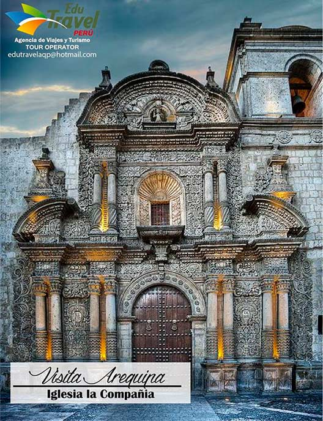
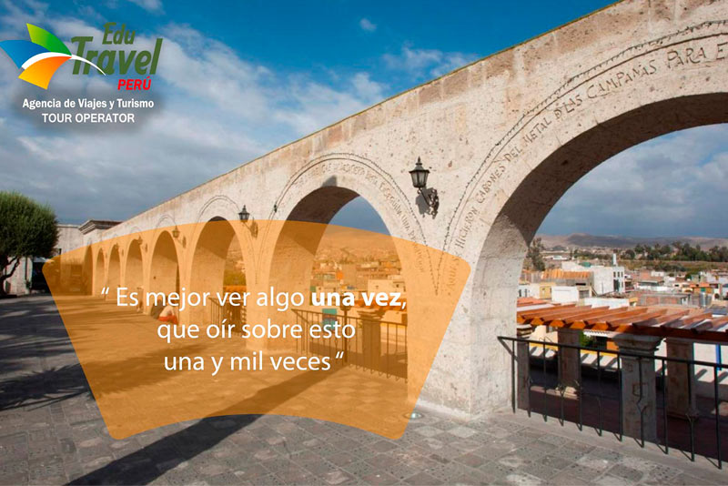
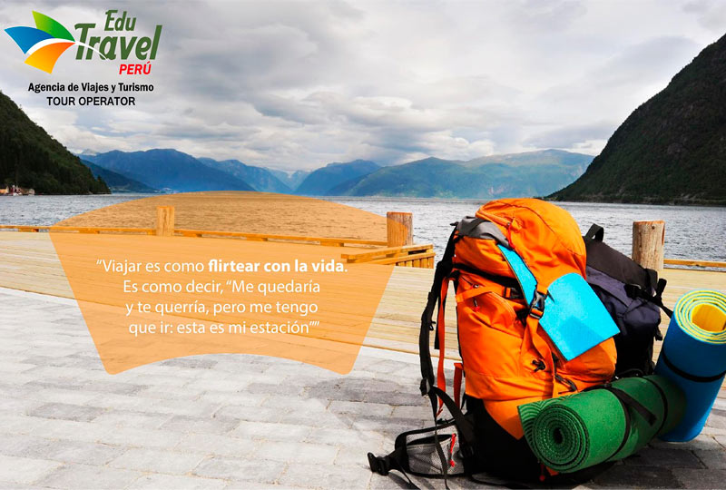
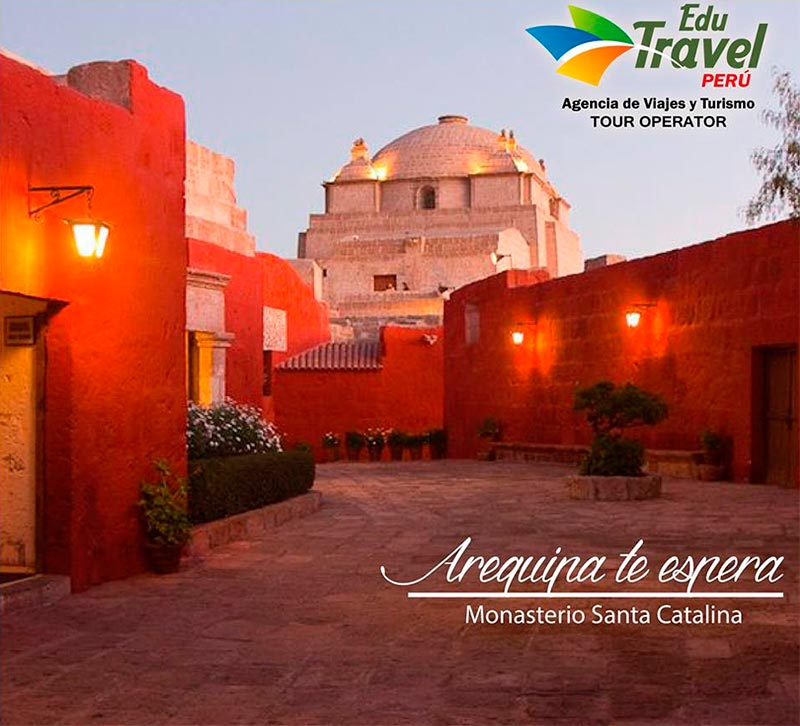
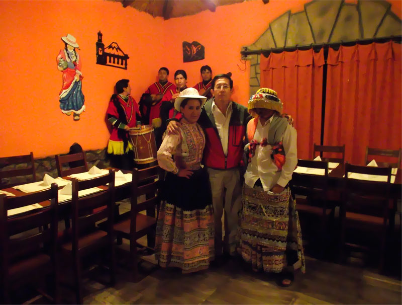
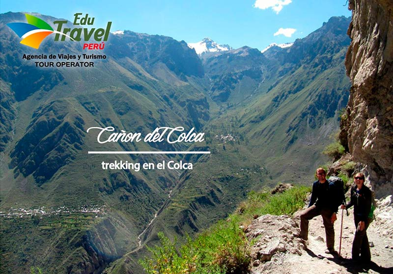

SERVICIOS En Edu Travel realizamos servicios turísticos convencionales, receptivos y místicos, así como de salud y aventura. Para darle una mejor atención, contamos con guías en todos los idiomas y movilidades nuevas. Además, llevamos a cabo la venta de tours nacionales e internacionales y disponemos de personal especializado en ascensos a la montaña. Venga a conocernos, trabajamos con todos los hoteles, desde los más económicos hasta los más exclusivos. |
||
|  |  |  |
|  |  |  |
Garantizamos el mejor itinerario turístico, por eso nos avalan como la mejor opción cientos de clientes satisfechos. Conozca nuestros programas:
|
||